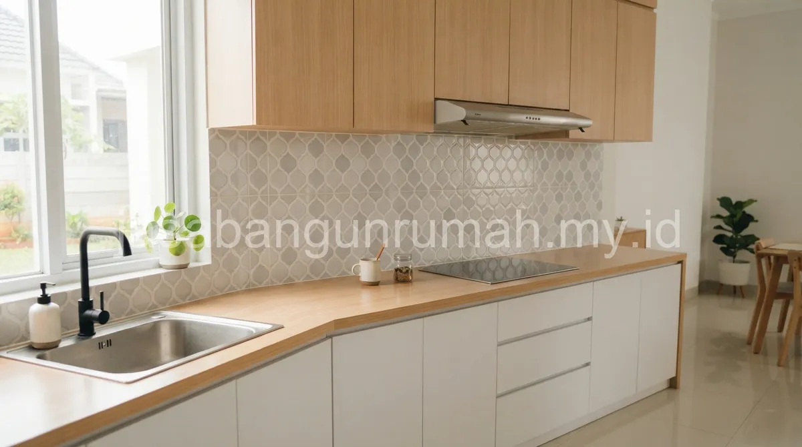

Daftar Isi
Biaya cor meja dapur beton pada rumah subsidi umumnya menjadi salah satu komponen utama renovasi dapur, dihitung berdasarkan panjang meja dan spesifikasi keramik pelapis yang dipilih oleh pemilik rumah.
Berapa Estimasi Biaya Cor Meja Dapur Beton untuk Rumah Subsidi?
Cor meja dapur beton dihitung berdasarkan panjang meja dalam meter lari, mencakup biaya bekisting, besi tulangan ringan, adukan cor, hingga finishing keramik pada permukaan meja.
Pemilihan keramik dengan motif granit sintetis dapat memberi tampilan lebih menarik dibandingkan keramik polos standar, meski dengan tambahan biaya yang relatif kecil dibandingkan total biaya renovasi dapur secara keseluruhan.
Meja dapur beton dipilih karena lebih tahan lama dan mudah dirawat dibandingkan meja dari material kayu yang rentan lembap di area dapur, terutama untuk rumah subsidi di wilayah Babelan Bekasi Utara yang memiliki kelembapan udara cukup tinggi.
Apa Saja Komponen Biaya Renovasi Dapur secara Keseluruhan?
Komponen biaya renovasi dapur rumah subsidi di Babelan umumnya mencakup pekerjaan dinding tambahan menggunakan bata hebel, pemasangan keramik dinding dan lantai, cor meja dapur, serta instalasi air bersih dan saluran pembuangan.
| Komponen Pekerjaan | Deskripsi | Catatan |
|---|---|---|
| Dinding Tambahan | Pasangan bata hebel untuk perluasan area dapur | Disesuaikan dengan sisa lahan belakang yang tersedia |
| Keramik Dinding dan Lantai | Pemasangan keramik anti licin untuk area dapur | Dipilih yang tahan terhadap percikan minyak dan air |
| Meja Dapur Beton | Cor meja dengan finishing keramik pelapis | Panjang disesuaikan kebutuhan memasak keluarga |
| Instalasi Air | Sambungan pipa air bersih dan saluran pembuangan | Termasuk pemeriksaan tekanan air setelah instalasi |

Apakah Septic Tank Perlu Turut Diperhatikan Saat Renovasi Dapur?
Septic tank standar pada rumah subsidi sebaiknya turut diperiksa kondisinya saat renovasi dapur dilakukan, terutama apabila penambahan area dapur berdekatan dengan saluran pembuangan air kotor yang sudah ada.
Apabila kapasitas septic tank yang ada dirasa masih memadai, biasanya tidak perlu penggantian, namun pemeriksaan saluran tetap penting agar tidak terjadi penyumbatan setelah area dapur diperluas.
Bagi warga Babelan Bekasi Utara yang ingin mengetahui simulasi biaya renovasi dapur lebih rinci sesuai kondisi rumah, dapat berkonsultasi langsung dengan tim renovasi profesional kami untuk mendapatkan estimasi biaya yang akurat.